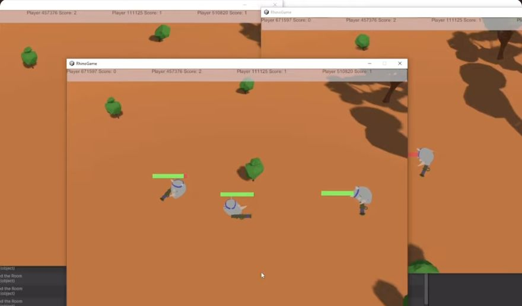
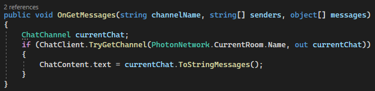

See the project in action
From lobby to shared gameplay.
The original coursework recording shows the room interface and several game windows running together. Start with the short clips below, then follow the implementation.
Additional coursework walkthrough ↗
Archived demonstration footage; this is not a newly tested build.
The project and scope
Build a networked game where players can join a room, enter a shared scene, exchange messages and record scores. The project combines Unity gameplay scripts, Photon room/chat services and PlayFab leaderboard calls.
The source collection contains 23 gameplay scripts covering both single-player foundations and multiplayer features. The walkthrough follows a player from the lobby into a match, then through chat, scoring and saved progress.
Follow a player through the game
| Stage | Implementation |
|---|---|
| Connect and join | MultiplayerLobby connects using configured Photon settings, creates rooms with MaxPlayers = 4, caches room updates and updates the player list. |
| Start a match | The master client controls the start button; starting closes the room and loads the battle scene for connected players. |
| Move and fire | MultiPlayer checks PhotonView.IsMine before handling input. Fire is an RPC broadcast through AllViaServer, and health is sent through IPunObservable. |
| Chat | Chat subscribes to the current room’s channel, services callbacks and updates displayed messages. |
| Record a result | MultiplayerLevelManager checks scores, shows the winner and updates a personal best. GameManager handles local JSON persistence; GlobalLeaderboard calls PlayFab statistics APIs. |
The code illustrates several kinds of state: local player input, shared room properties, transient chat messages and persistent score data. Each has a different owner and lifecycle.
Read the source in context
- Lobby and room lifecycle ↗
- Player ownership, firing and health ↗
- Room chat callbacks ↗
- Local player data and backend login ↗
- Match results and personal bests ↗
- Leaderboard API integration ↗

What is verified
The original video demonstrates multiple game windows with players, health bars and scores. Scripts and report evidence were also reviewed; a fresh Unity build or multi-client session was not run. This is a source collection, not a browser-playable game. The original scenes, prefabs, SDKs and service configuration are required to run it.
AllViaServer relays an RPC; it does not make the game server-authoritative. Damage and score logic remain client-side. Authoritative validation would need to be added and tested separately.
Testing and engineering priorities
- Run two clients through room creation, join, leave, master-client change and scene transitions.
- Check firing, health and scoring under latency and disconnects; validate damage and score changes authoritatively.
- Test empty and populated leaderboards, service failures and first-run local saves.
- Reduce repeated firing RPC traffic and add reliable reconnect behaviour.